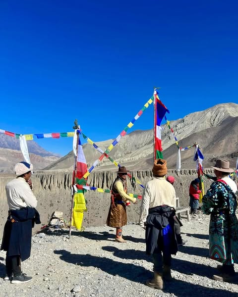
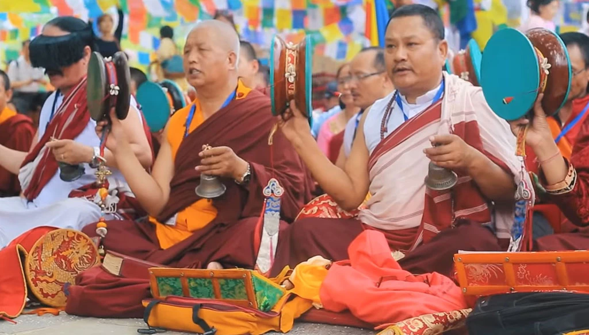

Experience the Vibrant Festivals of Kagbeni
Kagbeni Village comes alive with colorful celebrations and cultural events that reflect the rich heritage of its residents. The festivals are not only a time of joy but also an opportunity for the community to come together in harmony and spirituality.
Tiji Festival

The Tiji Festival, also known as the "Prayer for World Peace," is one of the most significant events celebrated in Kagbeni. This three-day festival usually takes place in May and symbolizes the victory of good over evil.
Celebration Highlights:
- Colorful mask dances performed by local monks.
- Rituals and prayers to promote peace.
- A vibrant atmosphere filled with music and joy.
Lhosar (Tibetan New Year)
Lhosar marks the Tibetan New Year and is celebrated with great enthusiasm in Kagbeni. Families gather to share traditional meals and participate in cultural activities, making it a time of renewal and hope.
Celebration Highlights:
- Special foods such as gutuk (dumplings).
- Traditional dances and music.
- Family gatherings and community feasting.
Buddha Jayanti
Buddha Jayanti is celebrated to honor the birth, enlightenment, and death of Gautama Buddha. Villagers engage in prayers, meditation, and acts of kindness during this significant festival.
Celebration Highlights:
- Visiting local monasteries for prayers.
- Community service and charity activities.
- Peaceful gatherings promoting mindfulness and compassion.
Join the Festivities
Participating in the festivals of Kagbeni offers a unique opportunity to immerse yourself in the local culture, witness traditional practices, and connect with the warm and welcoming community. The vibrant celebrations create lasting memories and a deeper appreciation for the rich heritage of this beautiful village.